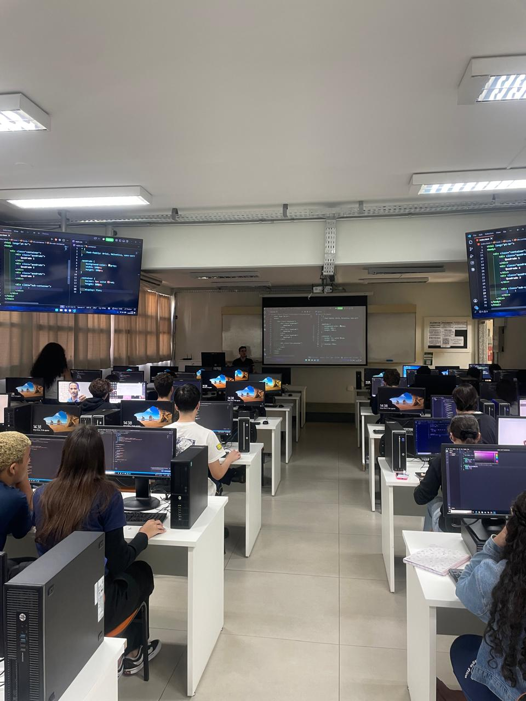

css
Relatório – 12ª Aula
Data: 11/08/2026
Turma: A
Instrutor:Victor
BoxModel
No dia 11 de agosto, o Victor conduziu a aula sobre Box Model, detalhando a influência de dimensões, margens e espaçamentos na estrutura da página. Ele usou o layout do YouTube para exemplificar como grandes plataformas organizam seus blocos visuais com CSS. O encerramento do conteúdo ficou por conta do Flexbox Froggy, onde os alunos aplicaram as propriedades de alinhamento e posicionamento de forma prática.
